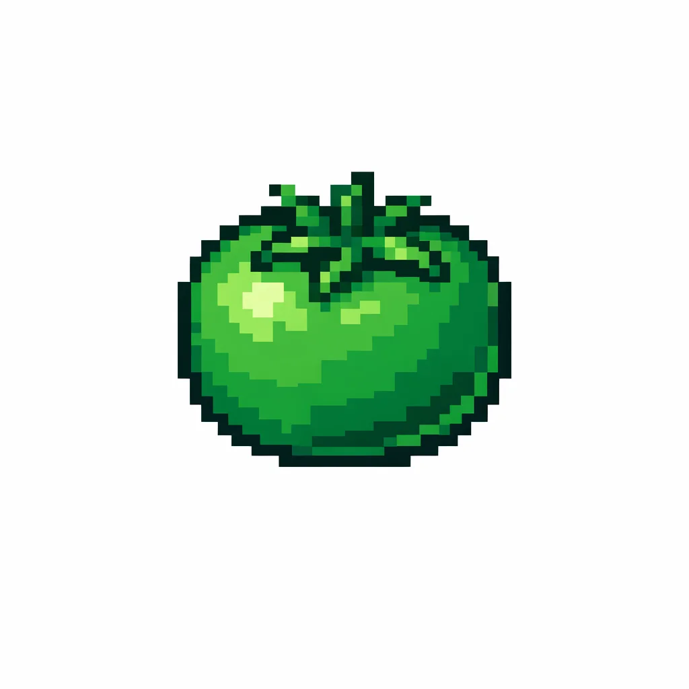

The Green Tomato Merch
The Green Tomato

"The Vegetable of Record"
The Vegetable of Record
Pixel art straight from a 1997 clipart CD.
Always Investment-Ready
Under Construction
GeoCities aesthetic for the perpetual economic development announcement.